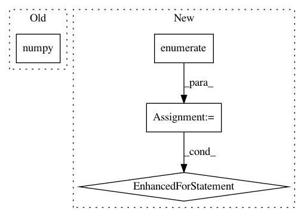

8c89b08a9ee11f62d86a007cee42e5c68afa3d02,allennlp/models/biaffine_dependency_parser.py,BiaffineDependencyParser,_run_mst_decoding,#Any#Any#,508
Before Change
def _run_mst_decoding(batch_energy: torch.Tensor, lengths: torch.Tensor) -> Tuple[torch.Tensor, torch.Tensor]:
heads = []
head_tags = []
for energy, length in zip(batch_energy.detach().cpu().numpy(), lengths):
head, head_tag = decode_mst(energy, length)
heads.append(head)
head_tags.append(head_tag)
After Change
// Find the labels which correspond to the edges in the max spanning tree.
instance_head_tags = []
for child, parent in enumerate(instance_heads):
instance_head_tags.append(tag_ids[parent, child].item())
// We don"t care what the head or tag is for the root token, but by default it"s
// not necesarily the same in the batched vs unbatched case, which is annoying.
// Here we"ll just set them to zero.
instance_heads[0] = 0
instance_head_tags[0] = 0
heads.append(instance_heads)
head_tags.append(instance_head_tags)
In pattern: SUPERPATTERN
Frequency: 4
Non-data size: 4
Instances
Project Name: allenai/allennlp
Commit Name: 8c89b08a9ee11f62d86a007cee42e5c68afa3d02
Time: 2018-08-20
Author: markn@allenai.org
File Name: allennlp/models/biaffine_dependency_parser.py
Class Name: BiaffineDependencyParser
Method Name: _run_mst_decoding
Project Name: lcswillems/torch-rl
Commit Name: 87232aa39c159f04a501ad268012da45a1ff537c
Time: 2018-05-14
Author: lcswillems@gmail.com
File Name: torch_rl/torch_rl/algos/base.py
Class Name: BaseAlgo
Method Name: collect_experiences
Project Name: tensorflow/models
Commit Name: bc324fda2866eab986a604b19272137f9006a603
Time: 2021-02-10
Author: arashwan@google.com
File Name: official/vision/beta/tasks/semantic_segmentation.py
Class Name: SemanticSegmentationTask
Method Name: reduce_aggregated_logs
Project Name: IBM/adversarial-robustness-toolbox
Commit Name: c17c92d84ec9216b781ecfbc25c6df225e2fd4f1
Time: 2020-11-11
Author: M.N.Tran@ibm.com
File Name: art/defences/preprocessor/audio_filter_pytorch.py
Class Name: AudioFilterPyTorch
Method Name: __call__